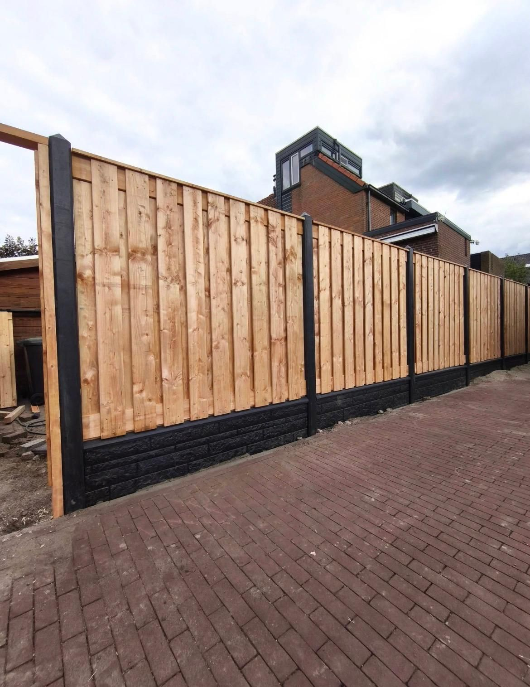
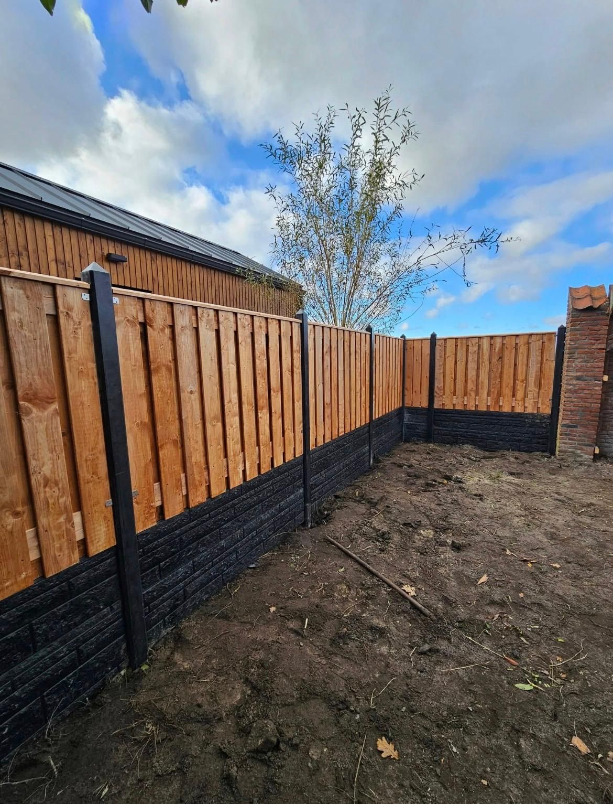
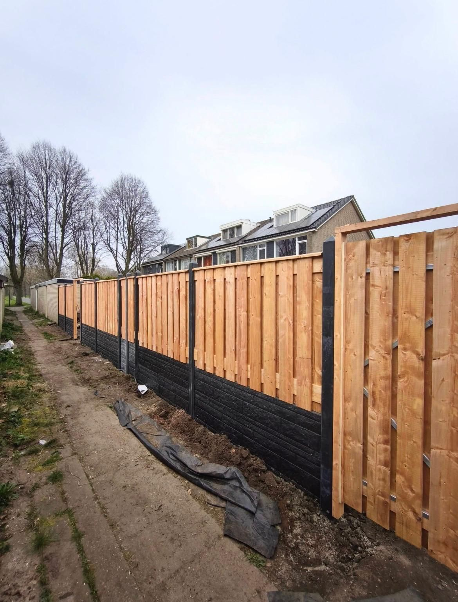

Schutting · Dordrecht
Grenen schutting op zwarte onderplaat
Nieuwe schutting in grenenhout op een zwarte onderplaat, met border.
Situatie
De achtertuin had een verouderde erfafscheiding en een border die opnieuw ingericht moest worden.
Uitgevoerde werkzaamheden
- Oude erfafscheiding verwijderd
- Nieuwe schutting gesteld en verankerd
- Border uitgegraven en voorzien van verse tuinaarde en beplanting
Foto's
Dit project in beeld


Heeft u een vergelijkbaar project?
Stel uw eigen project samen — gebruik dit als inspiratie, met uw eigen maten en wensen.
Meer werk